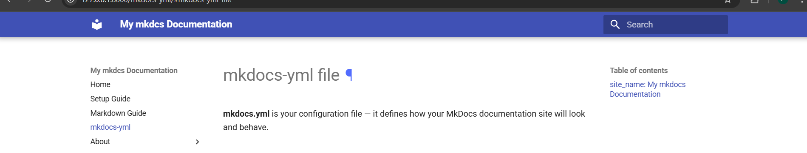
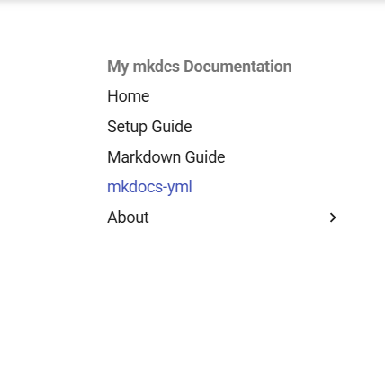
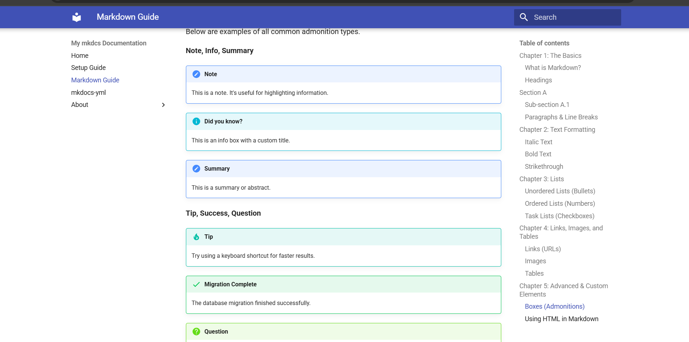

mkdocs-yml file¶
mkdocs.yml is your configuration file — it defines how your MkDocs documentation site will look and behave.
site_name: My mkdocs Documentation¶
- This sets the title of your documentation site.
- Appears in the site header and browser tab.

nav: (Navigation Menu)¶
- Defines the navigation structure (the sidebar or top menu of your site).
- Each item points to a Markdown file (.md) inside your project.
- Appears differently in different themes.
Home -> index.md
Setup Guide -> setup-guide.md
Markdown Guide -> markdown-guide.md
mkdocs-yml -> mkdocs-yml.md
About
├─ about -> about.md
└─ about us -> aboutUs.md
Screenshot:

extra_css¶
- Here you add custom CSS to style your site.
- We need to write custom css even if we want to remove any pre created element.
- css/custom.css
theme¶
- Here we can change theme
- material theme comes with the basic mkdocs package.
theme:
name: material
markdown_extensions:¶
- These extend the default Markdown behavior:
toc (Table of Contents) :¶
- toc:
permalink: true
toc_depth: 2-3
- permalink: true → Adds clickable anchor links (#) to headings.
- toc_depth: 2-3 → Only show headings H2 and H3 in the sidebar TOC.
admonition :¶
- Adds note/warning/info boxes like:
!!! note
This is a note box.
screenshot:
